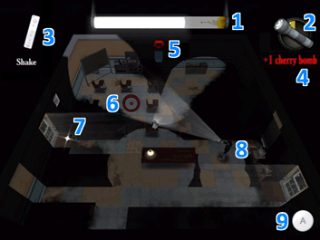

Below is a screen from the game, with information on everything that appears in
the game's Heads-Up Display (HUD):

1 - Light Meter
This meter fills based on how many electrical light sources are
active in the current level. If it is over-filled, the meter will burst and force the
player to restart the level. This meter can be drained by turning off electrical light
sources no longer required to advance through the level.
2 - Current Item
This graphic indicates the current item or object that the player
will use by pressing the A Button. By default, this graphic indicates the currently-selected
item. When Jake is standing next to a light source or other interactive object, however, that
object will replace the currently-held item’s icon. The player must move Jake away from any
nearby objects in order to use a held item. This graphic also indicates how many of the current
item is held. In the above graphic, the player has two slingshot pellets. When an item’s inventory
is used up, that item will not be selectable again until its inventory is replenished. When no
additional items are held, the flashlight will be selected by default.
3 - Shake Animation
When Wii Remote motion is required, an animated graphic instructing
the player how to move the Wii Remote will appear here.
4 - Item Collection Text
Whenever an item is collected, text explaining what item has
been collected will appear here briefly.
5 - Exit Door
Each room’s exit door is always visible by its red glow. When Jake is close
enough to open an exit door, its red glow will increase in size. The exit door is always located
on the back wall of each room. Rooms where bosses are encountered do not have an exit door.
6 - Reticle
The reticle allows the player to aim and direct Jake’s focus. The reticle
changes shape when the player is aiming with a projectile, to better aim at the target.
7 - Sparkle
Any collectable item that is caught in light will sparkle, to inform the
player that it can be collected once Jake is able to reach it.
8 - Jake
The hero of LIT is always displayed onscreen.
9 - A Button
When pressing the A Button can affect a nearby object, an A Button graphic
appears here to reinforce that idea.